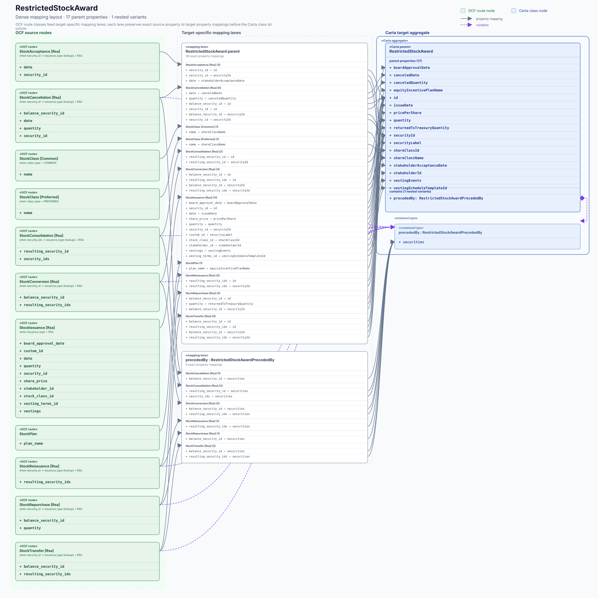

Carta record definition
RestrictedStockAward
#/$defs/RestrictedStockAward
{kind=link}

Target evidence
Who can fill this target?
StockAcceptanceRsa · date · OCF type: Date ↗
Open mapping issue ↗StockCancellationRsa · security_id · OCF type: string ↗
Open mapping issue ↗StockClassPreferred · name · OCF type: string ↗
Open mapping issue ↗StockConsolidationRsa · resulting_security_id · OCF type: string ↗
Open mapping issue ↗StockConversionRsa · resulting_security_ids · OCF type: array<string> ↗
Open mapping issue ↗StockIssuanceRsa · vesting_terms_id · OCF type: string ↗
Open mapping issue ↗StockReissuanceRsa · resulting_security_ids · OCF type: array<string> ↗
Open mapping issue ↗StockRepurchaseRsa · balance_security_id · OCF type: string ↗
Open mapping issue ↗StockTransferRsa · resulting_security_ids · OCF type: array<string> ↗
Open mapping issue ↗Property ledger
Slot by slot
Schema types are shown for both sides of each mapping slot.
| Carta property / type | Status | OCF evidence / type | |
|---|---|---|---|
| boardApprovalDateCarta type Iso8601CompleteCalendarDate ↗ | direct | StockIssuance.board_approval_dateOCF type Date ↗ | Issue ↗ |
| canceledDateCarta type Iso8601CompleteCalendarDate ↗ | direct | StockCancellation.dateOCF type Date ↗ | Issue ↗ |
| canceledQuantityCarta type Decimal ↗ | direct | StockCancellation.quantityOCF type Numeric ↗ | Issue ↗ |
| equityIncentivePlanNameCarta type string ↗ | direct | Issue ↗ | |
| idCarta type string ↗ | empty | No OCF source evidence | Documented |
| issueDateCarta type Iso8601CompleteCalendarDate ↗ | direct | StockIssuance.dateOCF type Date ↗ | Issue ↗ |
| issuerIdCarta type string ↗ | empty | No OCF source evidence | Documented |
| lastModifiedDatetimeCarta type Iso8601CompleteCalendarDateTime ↗ | empty | No OCF source evidence | Documented |
| precededByCarta type RestrictedStockAwardPrecededBy ↗ | structural | StockCancellationOCF type StockCancellation ↗StockConsolidationOCF type StockConsolidation ↗StockConversionOCF type StockConversion ↗StockReissuanceOCF type StockReissuance ↗ | Issue ↗ |
| pricePerShareCarta type Money ↗ | direct | StockIssuance.share_priceOCF type Monetary ↗ | Issue ↗ |
| quantityCarta type Decimal ↗ | direct | StockIssuance.quantityOCF type Numeric ↗ | Issue ↗ |
| returnedToPoolQuantityCarta type Decimal ↗ | empty | No OCF source evidence | Documented |
| returnedToTreasuryQuantityCarta type Decimal ↗ | direct | StockRepurchase.quantityOCF type Numeric ↗ | Issue ↗ |
| securityIdCarta type string ↗ | direct | StockCancellation.balance_security_idOCF type string ↗StockCancellation.security_idOCF type string ↗StockConsolidation.resulting_security_idOCF type string ↗StockConversion.balance_security_idOCF type string ↗ | Issue ↗ |
| securityLabelCarta type string ↗ | direct | StockIssuance.custom_idOCF type string ↗ | Issue ↗ |
| shareClassIdCarta type string ↗ | direct | StockIssuance.stock_class_idOCF type string ↗ | Issue ↗ |
| shareClassNameCarta type string ↗ | direct | StockClass.nameOCF type string ↗StockClass.nameOCF type string ↗ | Issue ↗ |
| stakeholderAcceptanceDateCarta type Iso8601CompleteCalendarDate ↗ | direct | StockAcceptance.dateOCF type Date ↗ | Issue ↗ |
| stakeholderIdCarta type string ↗ | direct | StockIssuance.stakeholder_idOCF type string ↗ | Issue ↗ |
| terminationDateCarta type Iso8601CompleteCalendarDate ↗ | empty | No OCF source evidence | Documented |
| vestedQuantityCarta type Decimal ↗ | empty | No OCF source evidence | Documented |
| vestingEventsCarta type array<RestrictedStockAwardVestingEvent> ↗ | direct | StockIssuance.vestingsOCF type array<Vesting> ↗ | Issue ↗ |
| vestingScheduleCarta type VestingSchedule ↗ | empty | No OCF source evidence | Documented |
| vestingScheduleTemplateIdCarta type string ↗ | direct | StockIssuance.vesting_terms_idOCF type string ↗ | Issue ↗ |
| vestingStartDateCarta type Iso8601CompleteCalendarDate ↗ | empty | No OCF source evidence | Documented |